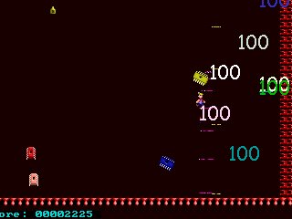
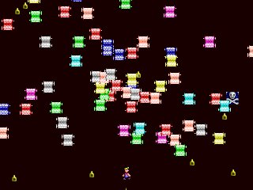

| Megapreview! |

|
|
Hands up who remembers Robotron? Good, lots of you. For those of you
who've never played it (or have memories as effective as Jon's), it was
an arcade game by Williams that dropped the player in an arena
surrounded by tons of baddies. The original had a rather innovative
two-joystick control system, where you moved with one stick and pointed
your gun with the other. Of course, the control system reappeared in
later Williams arcade games, Smash TV and Total Carnage. But Robotron
was the original, and a fine game it was too (and still is, if you don't
mind using MAME).
There's a rather clever man who agrees with us on the goodness of Robotron, and that's John Dow. The man behind remakes of Attack of the Mutant Camels and The Birds and the Bees (both reviewed last month), and also the man responsible for making us look dangerously like Your John Dow Monthly. He's decided to remake Robotron, but with a difference. Imagine Robotron crossed with Manic Miner. Sounds bizarre? Well, it is. Clever as it was, that two-stick control method doesn't really lend itself too well to the PC. Thankfully John's come up with a nice alternative - the player is continuously firing, and pressing fire holds them firing in their current direction, allowing you to move and fire in one direction, then move off in another direction while still firing in the first direction (if you see what I mean - it's easier than it sounds. Although obviously that wouldn't be difficult, given the impenetrability of that description. Honestly, you'd think I could describe a control system for a computer game properly, wouldn't you? Tch. It's a miracle I ever manage to buy things in shops, isn't it? Actually, I've developed an innate skill for just dropping things on the counter and grunting my way through 'conversations' with the girlie (and it is invariably a girlie) behind the counter. It's for the best, really, given my inability to articulate myself coherently. Er, where was I anyway? Oh yes, the megapreview...) So, the game itself. Robotron was a fine game; slaughter all the bad guys in the arena, move on to a harder one, and do it all again. But where does the Manic Miner side of things come into it? Well, to finish levels in Willytron, you have to not kill everything (although it would help), but collect all of the keys. Yes, just like Manic Miner (albeit without the rapid-fire laser gun). The version we got a look at was apparently an alpha-ish one, but already it plays unbelievably well. The graphics are sharp and clear, and it has all the frenetic pace of Robotron. It does seem to have a slightly nicer difficulty curve, though, with the first few levels warming you up for the increasingly tricky later challenges. The weapons power-ups that have been implemented are devastating in their effect. Really, the number of bad guys that get slaughtered in this game is quite huge. Within seconds of a level starting you'll have cut through tens of baddies - either that or you'll be dead. Willytron looks to be shaping into something truly wonderful. Given its current status, and John Dow's track record for remakes, it'll take something really remarkable for Willytron to be anything other than a YS3 Megagame. |

This is what happens to trainspotters, which is why you don't see them any more.  A cast of thousands! And they all want to kill you! Run away! |
| Back to Future Shocks |